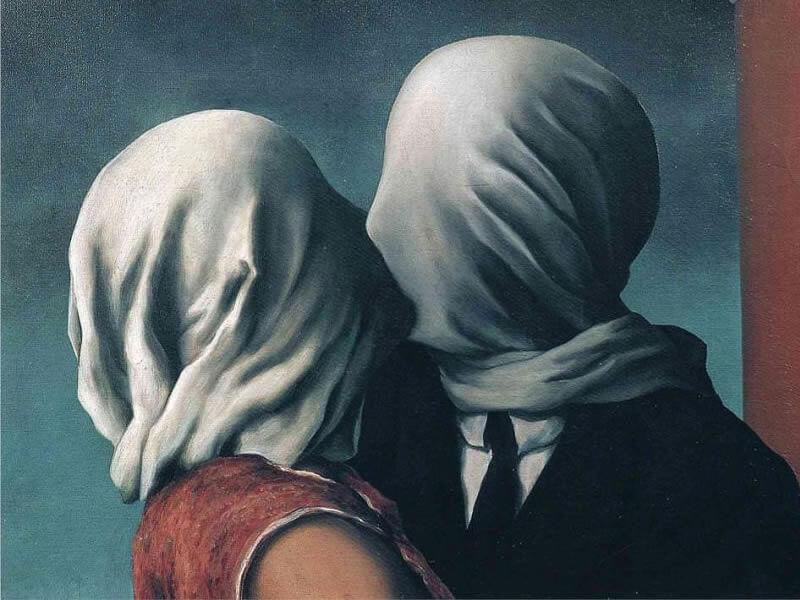
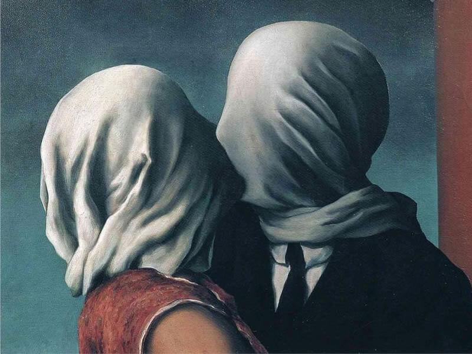

Hola, sean bienvenidos a mi página sobre la Galeria de arte, espero que sea de su agrado.
En esta ocasión les presentaré algunas pinturas las cuales en mi parecer son magníficas y espectaculares.
Tales como la pintura hecha por Salvador Dalí, el cual nos ofreció una propuesta algo arriesgado en el mundo del arte, siendo así que nos presentaría una obra sobre unos relojes derretidos, el cual a mi opinión es simplemente bellisimo como nos planteó estas figuras, siendo así parte fundamental en el arte surrealista.
A continuación les presentaré obras acerca del arte surrealista.

 
